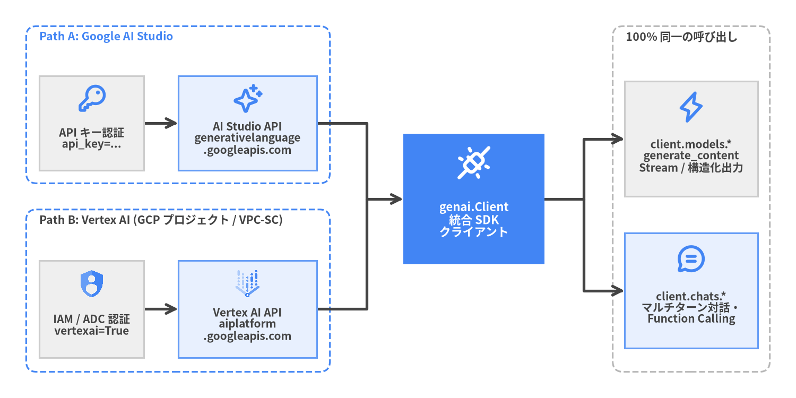
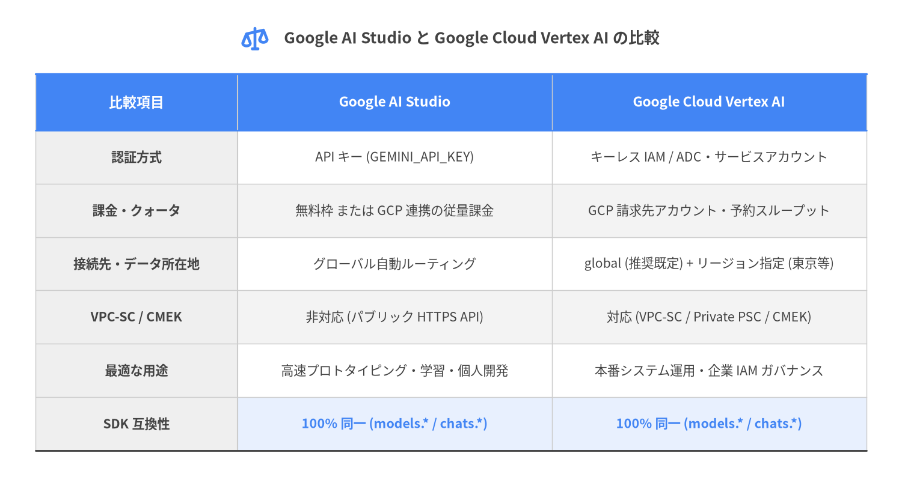

02. Vertex AI で動かす Hello World とバックエンドの使い分け
統合 google-genai SDK の最大の強みは、Google AI Studio と Google Cloud Vertex AI の違いが genai.Client(...) の初期化コードのみに局所化されている点にあります。一度クライアントを生成すれば、client.models.generate_content、ストリーミング、ThinkingConfig、Pydantic による構造化出力、マルチターンチャット（client.chats）、Function Calling まで、後続のすべての呼び出しコードは 100% 同一のまま動作します。

View Drawlib Python Code
from drawlib.canvas import save, setup
from drawlib.diagrams.architecture import ArchitectureDiagram, GcpIcon, Node, NodeGroup, PhosphorIcon
from drawlib.styles import Styles
setup(width=152, height=76, dpi=150)
d = ArchitectureDiagram(
node_style=Styles.PrimaryBold,
node_text_style=Styles.DarkBold.patch(text_size=10.0),
edge_style=Styles.DarkBold,
edge_text_style=Styles.Dark.patch(text_size=10.0),
node_card_style=Styles.Neutral,
)
# Left-Top: Path A — Google AI Studio
path_a = d.add(
NodeGroup(
title="Path A: Google AI Studio",
width=58.0,
height=30.0,
style=Styles.PrimaryDashed.patch(shape_r=2.0),
text_style=Styles.PrimaryBold.patch(text_size=10.2, halign="left"),
),
xy=(0.0, 36.0),
)
ai_auth = path_a.add(
Node(
"API キー認証\napi_key=...",
width=20.0,
height=18.0,
icon=PhosphorIcon.KEY,
icon_size=5.8,
card_style=Styles.Neutral,
),
xy=(12.5, 11.5),
)
ai_ep = path_a.add(
Node(
"AI Studio API\ngenerativelanguage\n.googleapis.com",
width=26.5,
height=18.0,
icon=PhosphorIcon.SPARKLE,
icon_size=5.8,
card_style=Styles.PrimaryNeutral,
),
xy=(42.25, 11.5),
)
d.connect(ai_auth, ai_ep, routing="direct")
# Left-Bottom: Path B — Google Cloud Vertex AI
path_b = d.add(
NodeGroup(
title="Path B: Vertex AI (GCP プロジェクト / VPC-SC)",
width=58.0,
height=31.0,
style=Styles.PrimaryDashed.patch(shape_r=2.0),
text_style=Styles.DarkBold.patch(text_size=10.2, halign="left"),
),
xy=(0.0, 0.0),
)
vx_auth = path_b.add(
Node(
"IAM / ADC 認証\nvertexai=True",
width=20.0,
height=18.5,
icon=GcpIcon.IDENTITY_AND_ACCESS_MANAGEMENT,
icon_size=5.8,
card_style=Styles.Neutral,
),
xy=(12.5, 12.0),
)
vx_ep = path_b.add(
Node(
"Vertex AI API\naiplatform\n.googleapis.com",
width=26.5,
height=18.5,
icon=GcpIcon.VERTEX_AI,
icon_size=5.8,
card_style=Styles.PrimaryNeutral,
),
xy=(42.25, 12.0),
)
d.connect(vx_auth, vx_ep, routing="direct")
# Center Focal Hub: Unified genai.Client
hub = d.add(
Node(
"genai.Client\n統合 SDK\nクライアント",
width=27.0,
height=25.0,
icon=PhosphorIcon.PLUGS_CONNECTED,
icon_size=6.8,
style=Styles.WhiteBold,
card_style=Styles.PrimaryFlat,
text_style=Styles.WhiteBold.patch(text_size=10.6),
),
xy=(85.5, 33.0),
)
merge = d.junction((65.0, 33.0))
d.connect(ai_ep, merge, arrow="-", routing="orthogonal").via((65.0, 47.5))
d.connect(vx_ep, merge, arrow="-", routing="orthogonal").via((65.0, 12.0))
d.connect(merge, hub, routing="direct")
# Right: 100% Identical Downstream Calls
sdk_calls = d.add(
NodeGroup(
title="100% 同一の呼び出し",
width=30.0,
height=66.0,
style=Styles.MutedDashed.patch(shape_r=2.0),
text_style=Styles.DarkBold.patch(text_size=10.2, halign="left"),
),
xy=(112.0, 0.0),
)
models_node = sdk_calls.add(
Node(
"client.models.*\ngenerate_content\nStream / 構造化出力",
width=25.5,
height=22.0,
icon=PhosphorIcon.LIGHTNING,
icon_size=6.0,
card_style=Styles.Neutral,
),
xy=(15.0, 44.5),
)
chats_node = sdk_calls.add(
Node(
"client.chats.*\nマルチターン対話・\nFunction Calling",
width=25.5,
height=22.0,
icon=PhosphorIcon.CHAT_CIRCLE_TEXT,
icon_size=6.0,
card_style=Styles.PrimaryNeutral,
),
xy=(15.0, 15.5),
)
fork_pt = d.junction((106.5, 33.0))
d.connect(hub, fork_pt, arrow="-", routing="direct")
d.connect(fork_pt, models_node, routing="orthogonal").via((106.5, 44.5))
d.connect(fork_pt, chats_node, routing="orthogonal").via((106.5, 15.5))
d.draw(xy=(5.0, 5.0))
save()
1. Vertex AI での最小構成 Hello World（Colab キーレス IAM 認証）
Google Cloud Vertex AI を利用する場合、静的な API キーを発行・配布する必要はありません。ノートブック冒頭の !pip install -q google-genai セットアップセルを実行したあと、Google Colab 上で auth.authenticate_user() を呼び出すと、ブラウザの認証ポップアップを通じて Google Cloud IAM に紐づく一時的な認証情報（ADC: Application Default Credentials）が自動的に設定されます。事前に対象プロジェクトで Vertex AI API（aiplatform.googleapis.com）を有効化し、使用する Google アカウントに Vertex AI ユーザー（roles/aiplatform.user）ロールを付与したうえで、セル先頭の GC_PROJECT をご自身のプロジェクト ID に書き換えて実行してください（LOCATION = "global" と MODEL = "gemini-3.8-flash" はそのまま動作します）。
!pip install -q google-genai
GC_PROJECT = "your-gcp-project-id"
LOCATION = "global"
MODEL = "gemini-3.8-flash"
from google.colab import auth
from google import genai
auth.authenticate_user()
client = genai.Client(
vertexai=True,
project=GC_PROJECT,
location=LOCATION,
)
response = client.models.generate_content(
model=MODEL,
contents="こんにちは！",
)
print(response.text)
共有ノートブックでプロジェクト ID のハードコードを避ける方法
ノートブックを Git リポジトリにコミットしたりチームメンバーと共有したりする際は、プロジェクト ID をコードセルに直接記述せず、Colab シークレット（左サイドバーの鍵アイコンから GOOGLE_CLOUD_PROJECT を登録し「ノートブックからのアクセス」を有効化）から userdata.get("GOOGLE_CLOUD_PROJECT") で安全に読み込むパターンが推奨されます。
LOCATION = "global"
MODEL = "gemini-3.8-flash"
from google.colab import auth, userdata
from google import genai
auth.authenticate_user()
# Colab シークレットから GOOGLE_CLOUD_PROJECT を安全に取得
client = genai.Client(
vertexai=True,
project=userdata.get("GOOGLE_CLOUD_PROJECT"),
location=LOCATION,
)
response = client.models.generate_content(
model=MODEL,
contents="宇宙の豆知識を1つ教えてください。",
)
print(response.text)
推奨デフォルト
LOCATION = "global"とリージョンエンドポイントの使い分け: Vertex AI ではlocation="global"をデフォルトとして推奨します。最新の Gemini 3.8+ モデル（gemini-3.8-flashやglobal先行で公開される最新 Preview モデルなど）に対応しており、マルチリージョンへの動的なクォータルーティングによって高い可用性を確保できます。一方、データ所在地（データレジデンシー）を日本国内や特定地域に厳格に固定する必要があるワークロードでは、LOCATIONを"asia-northeast1"（東京）や"us-central1"（アイオワ）などのリージョンエンドポイントに変更してください。
2. Google AI Studio と Vertex AI の使い分け
google-genai SDK は両方のバックエンドを単一のクライアントインターフェースに統合しているため、開発初期は Google AI Studio で素早くプロトタイプを作成し、エンタープライズ向けのセキュリティやガバナンスが必要になった段階で、推論やチャットの呼び出しコードを1行も書き換えることなく Vertex AI へ移行できます。

View Drawlib Python Code
from drawlib.canvas import save, setup
from drawlib.icons import phosphor
from drawlib.smartarts import Table
from drawlib.styles import Colors, Styles
from drawlib.text import text
setup(width=152, height=82, dpi=150)
# Title header with Phosphor icon
phosphor.scales((43.0, 75.5), width=5.0, style=Styles.PrimaryBold)
text(
(79.5, 75.5),
"Google AI Studio と Google Cloud Vertex AI の比較",
style=Styles.DarkBold.patch(text_size=12.5),
)
table = Table(
cell_style=Styles.White,
text_style=Styles.Dark.patch(text_size=10.2),
header_cell_style=Styles.PrimaryFlat,
header_text_style=Styles.WhiteBold.patch(text_size=11.0),
border_style=Styles.MutedThin,
)
# 1. Neutral alternating rows
table.set_style_cell_evenodd(
even_color=Colors.Light,
even_text_style=Styles.Dark.patch(text_size=10.2),
odd_color=Colors.White,
odd_text_style=Styles.Dark.patch(text_size=10.2),
)
# 2. Bold neutral row headers in column 0
table.set_style_cell_rowheader(
background_color=Colors.Neutral,
text_style=Styles.DarkBold.patch(text_size=10.2),
)
# 3. Highlight 100% SDK compatibility row (row 6)
table.set_style_cell(
background_color=Colors.PrimaryNeutral,
text_style=Styles.PrimaryBold.patch(text_size=10.3),
rows=[6],
columns=[1, 2],
)
# 4. Re-apply focal header row style last so row 0 stays PrimaryFlat
table.set_style_cell_header(
background_color=Colors.Primary,
text_style=Styles.WhiteBold.patch(text_size=11.0),
)
table.set_style_border(
top=Styles.Primary.patch(line_color=Colors.Primary, line_width=1.6),
top2=Styles.Primary.patch(line_color=Colors.Primary, line_width=1.2),
bottom=Styles.Primary.patch(line_color=Colors.Dark, line_width=1.4),
left=Styles.Primary.patch(line_color=Colors.Muted, line_width=0.7),
left2=Styles.Primary.patch(line_color=Colors.Muted, line_width=1.0),
right=Styles.Primary.patch(line_color=Colors.Muted, line_width=0.7),
between_columns=Styles.Primary.patch(line_color=Colors.Muted, line_width=0.7),
between_rows=Styles.Primary.patch(line_color=Colors.Muted, line_width=0.7),
)
matrix_data = [
["比較項目", "Google AI Studio", "Google Cloud Vertex AI"],
["認証方式", "API キー (GEMINI_API_KEY)", "キーレス IAM / ADC・サービスアカウント"],
["課金・クォータ", "無料枠 または GCP 連携の従量課金", "GCP 請求先アカウント・予約スループット"],
["接続先・データ所在地", "グローバル自動ルーティング", "global (推奨既定) + リージョン指定 (東京等)"],
["VPC-SC / CMEK", "非対応 (パブリック HTTPS API)", "対応 (VPC-SC / Private PSC / CMEK)"],
["最適な用途", "高速プロトタイピング・学習・個人開発", "本番システム運用・企業 IAM ガバナンス"],
["SDK 互換性", "100% 同一 (models.* / chats.*)", "100% 同一 (models.* / chats.*)"],
]
table.draw_flexible(
xy=(6.0, 69.5),
column_widths=[34.0, 53.0, 53.0],
row_heights=[9.5, 9.0, 9.0, 9.0, 9.0, 9.0, 9.0],
data=matrix_data,
align="top_left",
)
save()
第3章〜第5章における初期化コードの扱い
- 第3章〜第5章では簡潔な AI Studio 初期化を採用: 第1章で確認したとおり、Google AI Studio の API キーは Google Cloud プロジェクトに直接リンクして課金やレート制限の引き上げを行えるため、第3章〜第5章では各サンプルを最小限の見通し良いコードに保つ目的で、簡潔な AI Studio 初期化（
genai.Client(api_key=userdata.get("GEMINI_API_KEY"))）に統一しています。 - Vertex AI ユーザーはそのまま差し替え可能: 第3章〜第5章のすべてのコードセル（ストリーミング、
ThinkingConfig、マルチモーダル入力、Pydantic 構造化出力、マルチターンチャット、Function Calling）は、冒頭のclient初期化部分を本章のvertexai=True（location="global"）構成に置き換えるだけで、残りのコードを1文字も変更せずに Vertex AI 上でそのまま動作します。